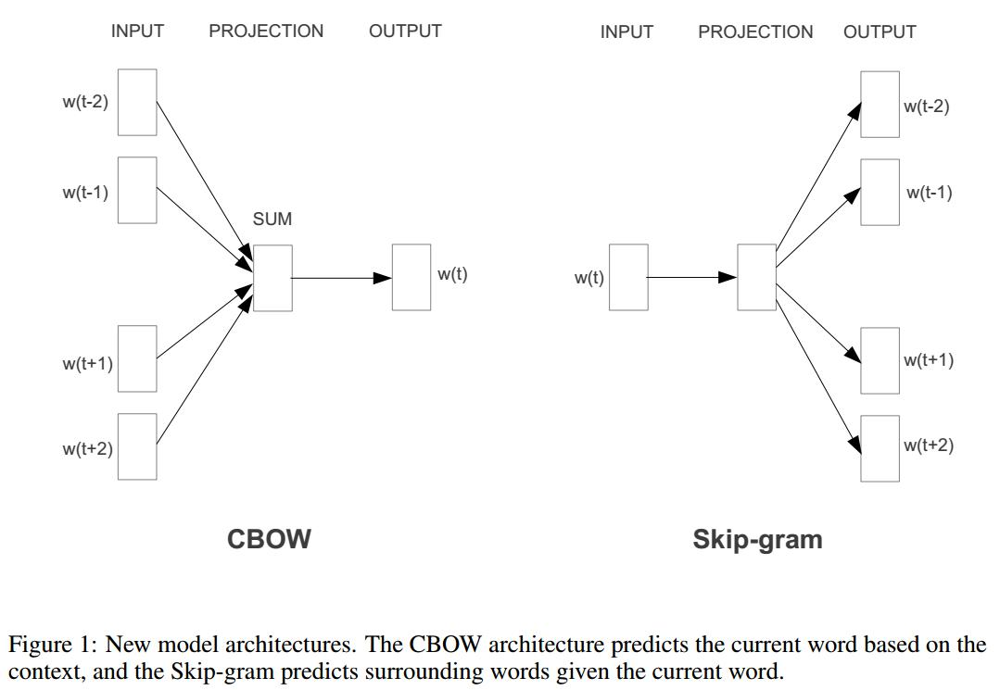

本文目地：从大量数据中学到continuous vector representations of words(word vectors)
结果：imporvements in accuracy at much lower computational cost
简单模型在大量数据集上训练的效果比复杂模型在少量数据集上的效果好→ \rightarrow →
quality of the vector representations
similar words tends to be close to each other
words have multiple degrees of similarity (多种程度的相似性), eg. nouns can have multiple word endings
similarity of word representations goes beyond simple syntactic regularities→ \rightarrow →
previous work ：A neural probabilistic language model learn jointly word vector representation and a statistical language modelLanguage Modeling for Speech Recognition in Czech only learn the word vectors
在使用嵌入矩阵W提取one-hot对应的词向量时，虽然是可以通过查表法得到第i i i d d d d d d
[ 0 , 0 , … , 1 , 0 ] V ⋅ [ a 1 , 1 a 1 , 2 … a 1 , d a 2 , 1 a 2 , 2 … a 2 , d ⋮ ⋮ ⋱ ⋮ a V , 1 a V , 2 … a V , d ] [0,0,\dots,1,0]_V \cdot
\left[
\begin{matrix} a_{1,1} & a_{1,2} & \dots & a_{1,d}\\
a_{2,1} & a_{2,2} & \dots & a_{2,d}\\
\vdots & \vdots & \ddots & \vdots\\
a_{V,1} & a_{V,2} & \dots & a_{V,d}
\end{matrix}
\right] [ 0 , 0 , … , 1 , 0 ] V ⋅ ⎣ ⎢ ⎢ ⎢ ⎡ a 1 , 1 a 2 , 1 ⋮ a V , 1 a 1 , 2 a 2 , 2 ⋮ a V , 2 … … ⋱ … a 1 , d a 2 , d ⋮ a V , d ⎦ ⎥ ⎥ ⎥ ⎤
之前NNLM语言模型中最复杂的部分是非线性隐藏层，但该部分保证了模型的性能=>为了减少复杂度同时保证精度不会太差，引入了两个新模型
continuous bag-of-words(连续词袋模型)
continuous skip-gram

使用Semantic-Syntactic Word Relationship test set 来评估语言模型的质量(quality)
Microsoft Research Sentence Completion Challenge 该任务将句子中的某个词去掉，然后选择一个词，使其与句子的其他部分更加协调
对于out-of-the-list words，可以将一些词的向量进行平均，然后得到未知词汇的词向量
总结 ：
neural network每层的计算复杂度为N × D N \times D N × D N N N D D D
数据越多+词向量维度越大=>效果越好
分层softmax的复杂度为l o g 2 ( V ) log_2(V) l o g 2 ( V ) V V V
负采样和分层softmax不仅提高训练效率而且提高准确率
词向量关注：语义关系(向量的代数运算，queen示例)+句法形式(比较级、复数，etc)
2. Distributed Representations of Words and Phrases and their Compositionality
high-quality distributed vector representations
capture precise syntactic
capture semantic word relationships
inherent limitation:
indifference to word order不注重词序
inability to represent idiomatic phrases不能表示常用的短语(New York不是两个单词意思的组合)
词向量重要作用：聚集相似单词 linguistic regularities and patterns (语言学规则和模式)的信息
vec('Madrid') - vec('Spain') + vec('France) => vec('Paris)
在skip-gram模型中，在训练时对高频词进行采样(subsampling)的优点：
将短语phrase也作为一个单独的token来训练得到向量，注意短语的向量不等于各个单词向量的拼接
相似性推理任务analogical reasoning task，即找到单词和短语对之间的关系：
vec('Montreal Canadiens') - vec('Montreal') + vec('Toronto') => ('Toronto Maple Leafs')
将所有单词放到二叉树的节点上，不去优化输出的词向量而是优化各个节点的向量，模型复杂度l o g 2 ( V ) log_2(V) l o g 2 ( V ) V V V
单词为w w w n ( w , j ) n(w,j) n ( w , j ) w w w j - t h j\text{-}th j - t h L ( w ) L(w) L ( w ) c h ( n ) ch(n) c h ( n ) [ x ] [x] [ x ] x x x p ( w O ∣ w I ) p(w_O | w_I) p ( w O ∣ w I )
p ( w ∣ w I ) = ∏ j = 1 L ( w ) − 1 σ ( [ n ( w , j + 1 ) = ch ( n ( w , j ) ) ] ⋅ v n ( w , j ) ′ v w I ) p\left(w | w_{I}\right)=\prod_{j=1}^{L(w)-1} \sigma\left([n(w, j+1)=\operatorname{ch}(n(w, j))] \cdot v_{n(w, j)}^{\prime}{v_{w_{I}}} \right) p ( w ∣ w I ) = j = 1 ∏ L ( w ) − 1 σ ( [ n ( w , j + 1 ) = c h ( n ( w , j ) ) ] ⋅ v n ( w , j ) ′ v w I )
计算的复杂度是L ( w O ) L(w_O) L ( w O ) l o g V logV l o g V
使用霍夫曼树将高频的词放到路径短的叶子节点，提高训练速度
注意：
标准的softmax中，每一个词w w w v w ′ v_w^{'} v w ′ v w v_w v w
分层softmax中除了一个词向量v w v_w v w v n ′ v_n^{'} v n ′
该方法可以用到skip-gram或者cbow，但道理类似，
在Noise Contrastive Estimation(NCE)模型中，好的模型可以有效的区分噪声和数据，所以这里模型的优化目标使，正样本属于数据集中的概率更大，负样本属于噪声分布的概率更大，样本的分类概率更接近真实结果，用极大似然概率的乘积来描述，取对数得下面结果：
log σ ( v w O ′ ⊤ v w I ) + ∑ i = 1 k E w i ∼ P n ( w ) [ log σ ( v w i ′ ⊤ v w I ) ] \log \sigma({v_{w_O}^{\prime}}^{\top} v_{w_I})+\sum_{i=1}^{k} \mathbb{E}_{w_i \sim P_{n}(w)}\left[ \log \sigma ({v_{w_i}^{\prime}}^{\top} v_{w_I}) \right] log σ ( v w O ′ ⊤ v w I ) + i = 1 ∑ k E w i ∼ P n ( w ) [ log σ ( v w i ′ ⊤ v w I ) ]
w i w_i w i v w I v_{w_I} v w I v w O ′ v_{w_O}^{\prime} v w O ′ v w i ′ v_{w_i}^{\prime} v w i ′ k k k k k k
这里负采样用NEG表示，与NCE不同：
只使用采集的样本，而NCE会使用噪声分布的数值概率
NEG只计算词向量内积，而NCE需要最大化softmax的对数概率
这里的噪声分布P n ( w ) P_n(w) P n ( w ) U ( w ) 3 / 4 / Z U(w)^{3/4}/Z U ( w ) 3 / 4 / Z Z Z Z
P ( w i ) = f ( w i ) 3 / 4 ∑ j = 0 n ( f ( w j ) 3 / 4 ) P\left(w_{i}\right)=\frac{f\left(w_{i}\right)^{3 / 4}}{\sum_{j=0}^{n}\left(f\left(w_{j}\right)^{3 / 4}\right)} P ( w i ) = ∑ j = 0 n ( f ( w j ) 3 / 4 ) f ( w i ) 3 / 4
我的理解：首先要计算数据集中每个单词的词频f ( w i ) f(w_i) f ( w i ) P ( w i ) P(w_i) P ( w i ) w i w_i w i P ( w i ) ∗ t a b l e _ s i z e P(w_i)*table\_size P ( w i ) ∗ t a b l e _ s i z e u n i g r a m t a b l e 怎 么 生 成 ？ \color{red}{unigram \space table怎么生成？} u n i g r a m t a b l e 怎 么 生 成 ？
作用：
在skip-gram模型中，遇到高频词会根据一个概率而随机将其抛弃。
论文中的概率公式：
P ( w i ) = 1 − t f ( w i ) P\left(w_{i}\right)=1-\sqrt{\frac{t}{f\left(w_{i}\right)}} P ( w i ) = 1 − f ( w i ) t
P ( w i ) P(w_i) P ( w i ) 抛弃 单词的概率，f ( w i ) f\left(w_{i}\right) f ( w i ) w i w_i w i t t t
博客 中的公式(word2vec程序中的公式)：
P ( w i ) = ( z ( w i ) 0.001 + 1 ) ⋅ 0.001 z ( w i ) P\left(w_{i}\right)=\left(\sqrt{\frac{z\left(w_{i}\right)}{0.001}}+1\right) \cdot \frac{0.001}{z\left(w_{i}\right)} P ( w i ) = ( 0 . 0 0 1 z ( w i ) + 1 ) ⋅ z ( w i ) 0 . 0 0 1
P ( w i ) P(w_i) P ( w i ) 保留 单词的概率，z ( w i ) z(w_i) z ( w i ) w i w_i w i 1 / x 1/x 1 / x
论文中与程序中定义的不同，程序中更加权威
我的理解：
方法：找到在一些上下文中经常一起使用的单词组合，但在其他上下文中不经常使用，然后将这些短语当作一个词来训练词向量
score ( w i , w j ) = count ( w i w j ) − δ count ( w i ) × count ( w j ) \operatorname{score}\left(w_{i}, w_{j}\right)=\frac{\operatorname{count}\left(w_{i} w_{j}\right)-\delta}{\operatorname{count}\left(w_{i}\right) \times \operatorname{count}\left(w_{j}\right)} s c o r e ( w i , w j ) = c o u n t ( w i ) × c o u n t ( w j ) c o u n t ( w i w j ) − δ
c o u n t ( w i ) count(w_i) c o u n t ( w i ) w i w_i w i c o u n t ( w i , w j ) count(w_i,w_j) c o u n t ( w i , w j ) δ \delta δ
总结 ：
对高频词的subsampling可以提升训练速度 ，并且提高低频词 的词向量的表示能力。论文中表示高频词和其他词共现的频率很高，从反方向表示就是高频词的向量表示经过很多样本训练后不会显著改变(the vector representations of frequent words do not change significantly after training on several million examples)，因此通过子采样随机抛弃一些高频词，可以使低频词和高频词实现一些平衡，不但减少了训练样本而且提高了低频词的表示能力
负采样提升训练速度，而且提高了高频词 和低维度 的词向量表示能力，为 什 么 会 对 高 频 词 和 低 纬 度 向 量 好 ？ \color{red}{为什么会对高频词和低纬度向量好？} 为 什 么 会 对 高 频 词 和 低 纬 度 向 量 好 ？
hierarchical softmax(分层softmax)对低频词 的效果好，参考关于word2vec，我有话要说 ，CBOW是基于上下文词汇预测中心词，虽然某些单词词频较低，但它会收到上下文的影响，上下文的词向量效果很好的话，也会提升作为中心词的低频词的词向量的表示能力